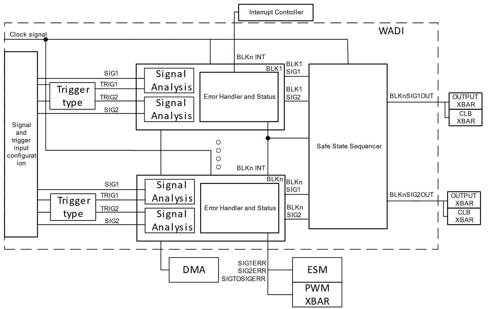

Waveform Analyzer Diagnostic Peripheral (WADI)#
Overview#
In this module, you will:
Gain a general understanding of what the WADI is.
Understand common examples of where WADI is typically used.
Introduction#
The WADI provides a way to capture signals, analyze the signals, and provide a safety mechanism to override the outputs in a predetermined manner. WADI can access various internal or external signals that can be analyzed to ensure safety of the overall system. The safe state sequencer (SSS) or the individual WADI block can be used to drive the input signals to a certain output generated pattern. The WADI can initiate DMA requests and generate interrupts to the interrupt controller. The analysis can be started based off a hardware trigger, software trigger, be synchronized between other triggers or require no trigger.
Types of analysis that the WADI can do:
Pulse width
Frequency
Dead band
Phase overlap
Signal to signal comparison
Based off these analyses, the WADI can override the input signals to generate a waveform desired to drive the system to safety using the SSS or from the WADI block. Below is an overall block diagram of the WADI.


Figure 1: WADI Block Diagram#
Application of the WADI#
The WADI provides signal analysis of digital waveforms and provides a dedicated safety mechanism block (SSS) to control the digital waveforms if the signals do not perform as expected. WADI is primarily used in safety applications where deviate waveforms applied to power switches can be detected and a corresponding course of action must be taken. WADI can be used to track the frequency of resonant converters, duty, phase overlap, and ensuring dead band configurations.
Why use the WADI?#
The main benefit of the WADI is that it is an on-chip method of analyzing signals without any additional hardware. The flexibility to monitor pulse width, frequency, dead band, and phase overlap can all be handled within the WADI blocks. The main interfaces with WADI are via DMA events.
Some advantages of using the WADI are:
Different types of digital waveform analysis can be done (pulse width, freq, etc)
Signal to signal analysis
When analyzing signals there is a configurable margin +/-x when analyzing signals
Safe state sequencer block to provide a safe way to override the signals being analyzed
With a general overview of the WADI established, we can dive into what the WADI is and how it works.
What is the WADI?#
The WADI acts as a waveform capture via the signal analysis block and a waveform generator by using the SSS to create a pattern of outputs depending on the error that is occurring in the system. There are dedicated registers that can be used to configure what error events to watch out for and to trigger the outputs to behave in a certain way. The WADI adds another layer of security on digital signals going out of the device.
How do I configure the WADI?#
To confogure the WADI:
Configure the input signals and trigger signals that will start the WADI analysis
Configure what type of check is enabled in the WADI block’s configuration (whether single signal analysis or signal-to-signal analysis)
Configure if you want to use the SSS to override the outputs or have the WADI Block override the outputs based on an error
The SSS can be used to chain events before triggering a change in the output and be used to create a pattern of outputs
Route the outputs to any GPIO
Test Your Knowledge!#
Question 1
Can WADI compare two signals to each other?
Answer
Yes, WADI can do comparisons between two signals per WADI block.
Question 2
Can I generate a pattern of outputs within the SSS to drive my input signals to a certain patter of states?
Answer
Yes, leveraging the SSS block, achieving a pattern of outputs depending on the WADI block events can be generated to override the input signals.
Summary#
The key takeaways from this learning module are:
WADI can perform single signal analysis or signal to signal analysis
WADI can analyze pulse width, frequency, dead band, phase overlap, aggregate the readings, take the average or peak of the signal analysis
WADI can analyze internal or external signals and drive the outputs to certain state or generate a patter of output events